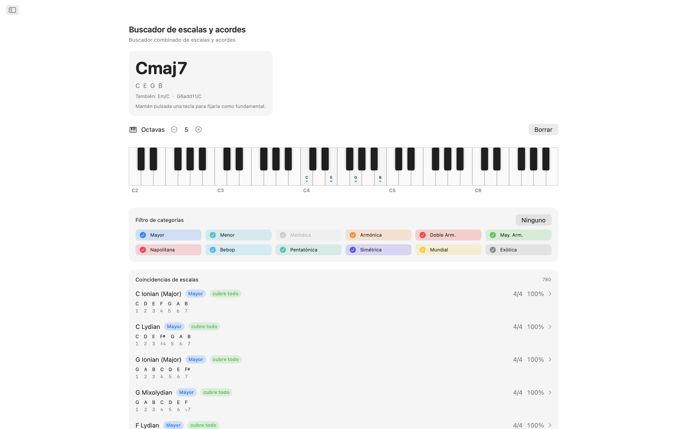
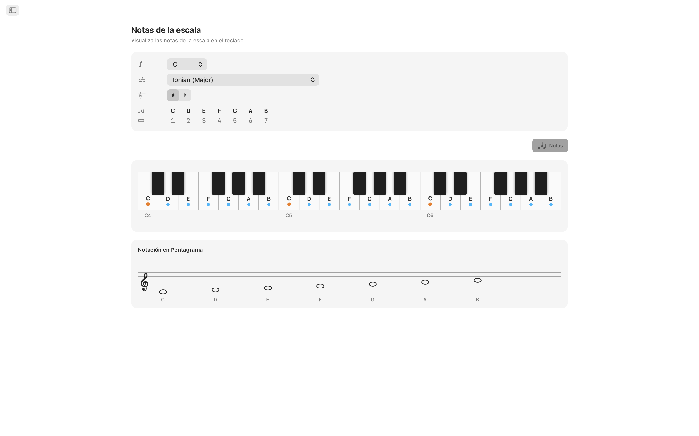
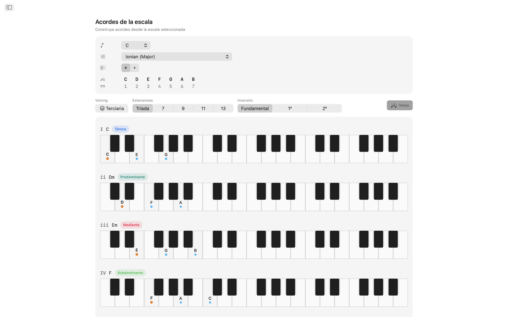
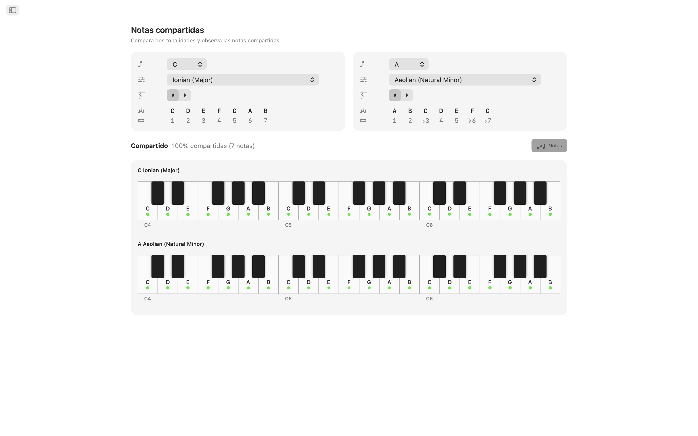
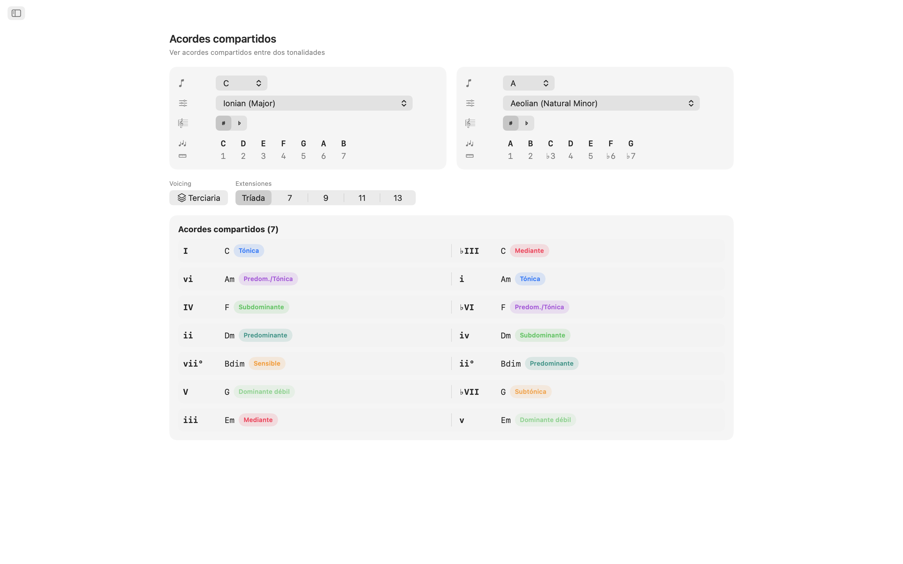
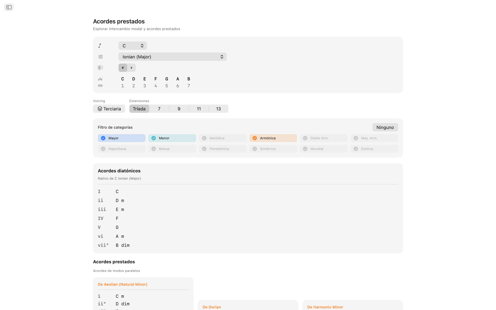
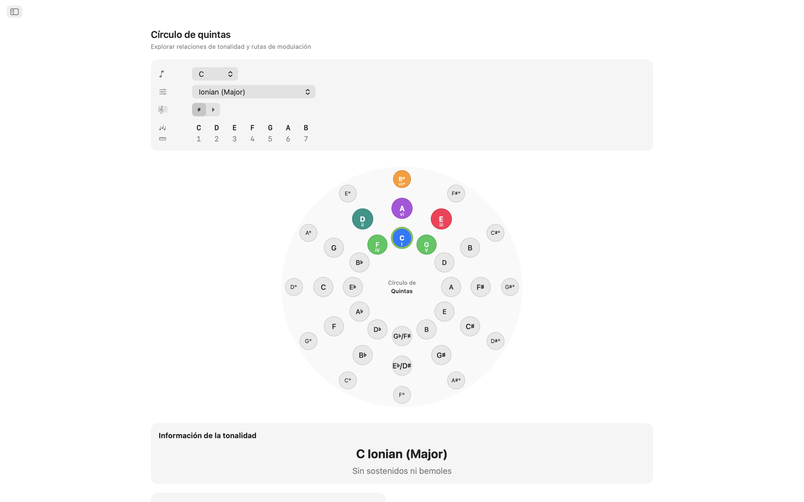
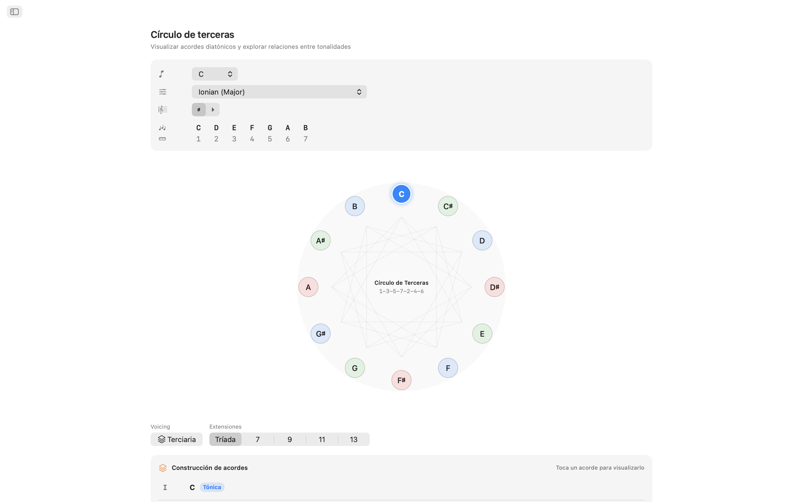
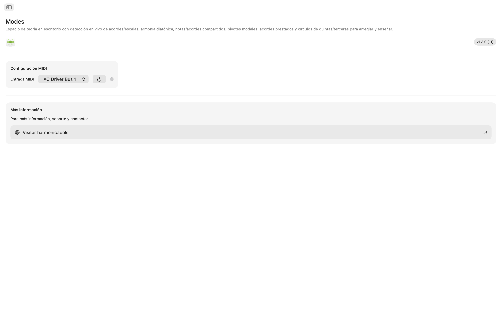

Modes para macOS
Un laboratorio práctico de teoría musical para macOS. Ya sea que esté escribiendo una canción, preparando una clase o explorando nuevo territorio armónico — Modes le brinda acceso instantáneo a escalas, acordes, voicings y rutas de modulación — todo en una app con navegación por barra lateral que cabe junto a su DAW.
- Identificación de escalas y acordes con MIDI + teclado en pantalla
- 61 escalas · 21 tipos de acordes · 8 familias de voicing
- Notas compartidas, acordes compartidos, acordes prestados
- Círculo de quintas + círculo de terceras interactivos
Capturas de pantalla
Incluye capturas en modo claro y oscuro que siguen el diseño del sitio web.











Funciones
- Identificación de escalas y acordes: Toque notas en el teclado interactivo de múltiples octavas o conecte un controlador MIDI. Modes reconoce el acorde tocado en tiempo real: mayor, menor, disminuido, aumentado, extendido, suspendido y más. Clasifica cada escala coincidente por cobertura de notas. Filtre resultados por categoría de escala (diatónica, menor melódica, menor armónica, pentatónica, bebop, simétrica, músicas del mundo y más) para encontrar el sonido deseado.
- 61 escalas y modos: Desde los siete modos diatónicos pasando por menor melódica, menor armónica, doble armónica, napolitana, bebop, pentatónica, blues, tono entero, disminuida, aumentada hasta escalas del mundo como Hirajōshi, Kumoi, In Sen, persa y enigmática. Cada escala se presenta con intervalos y se resalta en el teclado.
- Notas en la tonalidad: Seleccione cualquier nota fundamental y escala para ver cada nota en la tonalidad resaltada a lo largo de dos octavas. Reconozca al instante qué notas pertenecen a la escala y dónde se encuentra la fundamental.
- Acordes diatónicos: Genere tríadas o acordes de séptima diatónicos para cada grado de la escala elegida. Vea cifrado romano, nombres de acordes, etiquetas de función armónica (tónica, subdominante, dominante y más de 30 etiquetas detalladas) y representaciones de teclado con voicings — todo organizado para fácil comparación.
- 8 tipos de voicing: Construya acordes en disposición por terceras (Tertian), Sus2, Sus4, sexta, Add, cuartal, quintal y power. Elija desde tríadas hasta treceavas — cada extensión se etiqueta automáticamente.
- Notas y acordes compartidos: Compare dos tonalidades en paralelo. Vea qué notas se superponen, cuáles son únicas y qué acordes comparten ambas tonalidades. Indispensable para modulación suave y rearmonización.
- Acordes prestados: Analice su tonalidad en busca de acordes diatónicos nativos y todas las opciones prestadas de modos paralelos, agrupados por modo de origen. Descubra nuevos colores armónicos sin abandonar su centro tonal.
- Círculo de quintas: Doble anillo interactivo (mayor exterior, menor natural interior). Haga clic en un sector para cambiar de tonalidad. Vea de un vistazo relaciones de dominante, subdominante, relativa, parentesco y tonalidades vecinas con etiquetas de dificultad de modulación y detalles de armadura.
- Círculo de terceras: Explore relaciones de mediante cromática en un diagrama de ciclo disminuido. Teclas mayores y menores para cada clase de altura muestran conexiones de mediante, relativa y parentesco. Ideal para planificar modulaciones cinematográficas y neo-riemannianas.
- Compatibilidad con MIDI: Conecte cualquier teclado o controlador MIDI compatible. Las notas tocadas se combinan con clics en pantalla para una identificación fluida.
Diseñado para su escritorio
- Funciona completamente sin conexión — sin cuenta, sin anuncios, sin rastreo
- App nativa de macOS con navegación por barra lateral
- Interfaz compatible con modo oscuro que sigue el modo del sistema
- Escritura enarmónica: automática, con sostenidos o bemoles
- Ventana redimensionable — manténgala abierta junto a su DAW
Ya sea un productor que esboza progresiones de acordes, un guitarrista que aprende modos, un pianista que estudia armonía de jazz o un estudiante que se prepara para exámenes de teoría — Modes lleva la teoría musical avanzada a su escritorio.
Cobertura de teoría musical
Referencia completa de todas las escalas, modos, acordes, voicings e intervalos en la app.
Escalas y modos — 61 en total
Modos mayores (diatónicos)
Modos de menor melódica (Jazz Minor)
Modos de menor armónica
Modos de doble armónica menor (menor húngara)
Mayor armónica
Modos napolitanos menores
Modos napolitanos mayores
Bebop
Pentatónica y blues
Escalas simétricas y sintéticas
Pentatónica japonesa
Mundo / Otras
Acordes
Tipos de acordes reconocidos — 21
21 tipos de acordes reconocidos con detección automática de tensiones extendidas (9.ª, 11.ª, 13.ª se muestran como add9, add11, add13 cuando no hay 7.ª presente).
Cualidades de acordes (constructor de acordes) — 6
Cualidades de acordes disponibles en el constructor con análisis de cifrado romano.
Voicings de acordes — 8 tipos
Desde disposición por terceras (Tertian) hasta apilamientos de cuartas y quintas, desde tríadas hasta treceavas.
Intervalos, serie armónica y análisis
Los 12 intervalos cromáticos con inversiones, una serie de 16 armónicos, navegación completa del círculo de quintas en todas las tonalidades (escritura con sostenidos y bemoles con redefinición enarmónica automática/manual) y 32 etiquetas de función armónica de las familias de tónica, subdominante y dominante.